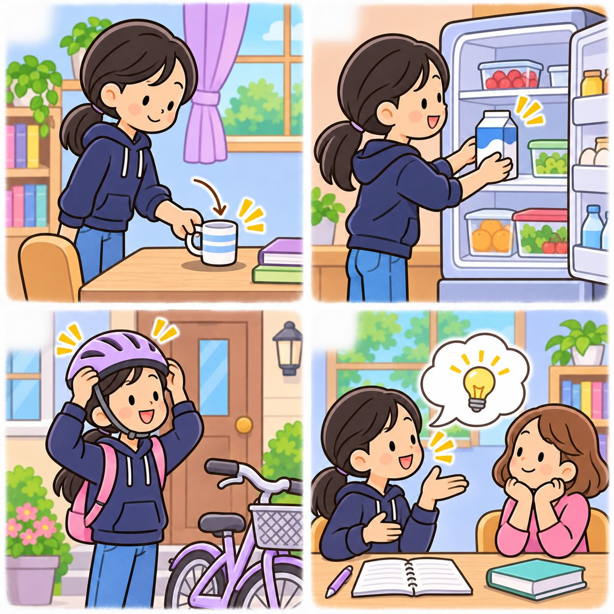
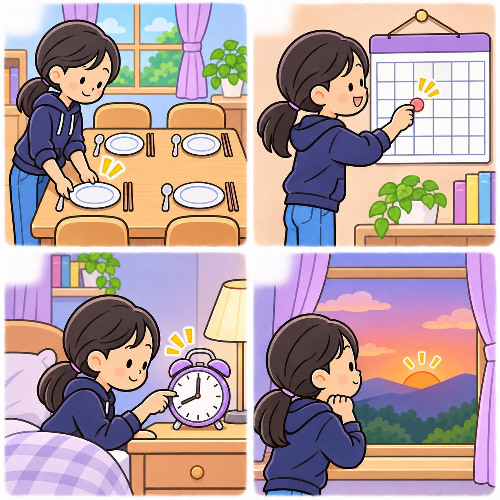

PART 1 · 놓고 옮기고오른쪽 쪽은 가리고 먼저 해 봐요.
A이 문장, 무슨 뜻?
친구가 내 그림이 어떠냐고 묻자, 나는 잠깐 생각하며 이렇게 말했어요.
Hmm, how should I put it?
여기서 put은 무슨 뜻?
바닷가에서 하늘이 주황빛으로 물들 때, 동생이 소리쳤어요.
Look! The sun is setting.
여기서 set은 무슨 뜻?
B내가 아는 뜻아는 뜻을 쓰고, 아래 단어는 뜻이 비슷하면 유 · 반대면 반
put =
put과place()take off()
set =
set과decide()rise()
C영어로 써 보기put · set 중 알맞은 단어를 넣어요 · 힌트는 문장 순서대로, 동사는 기본형
- 1나는 가방을 의자 위에 놓았다.I · my bag · on the chair
- 2엄마는 알람을 7시에 맞췄다.Mom · the alarm · for seven
- 3코트를 입어. 밖이 추워.on · your coat · it’s cold outside
- 4우리는 파티 날짜를 정했다.we · the date · for the party
④ 강의READING 뒤에 강의 → 이 쪽 채점(해설 p.2) · 틀린 문장 다시 쓰기 → MAKE IT MINE
강의 보기
put무언가를 어떤 자리로 옮겨 그곳에 있게 해요

1234책상 위, 냉장고 안, 머리 위, 말 속 — 자리만 다를 뿐 모두 ‘옮겨서 그곳에 두기’예요.In English put = to move something into a place and leave it there
여러 가지 뜻굵은 단어 앞뒤를 보고 짐작해 써요
- 1
She put the cup on the table.
그녀는 컵을 탁자 위에 .
- 2
Put the milk in the fridge.
우유를 냉장고에 .
- 3
Put on your helmet before you ride.
타기 전에 헬멧을 .
- 4
Let me put it another way.
그것을 다른 방식으로 .
유의어 · 반의어
- 유의어placePlace it here.여기에 놓아라.정해진 곳에 차분히 놓아요.
- 반의어take offTake off your shoes.신발을 벗어.몸에서 떼어 내요. put on과 반대.
유lay놓다반pick up집어 들다, remove치우다
set정해진 자리에 딱 맞게 두어요

1234접시는 제자리에, 날짜는 달력 한 칸에, 알람은 6시에 딱 맞춰 둬요. 해도 제자리(땅 아래)로 내려앉아요.In English set = to put something in the right place or position so it stays
여러 가지 뜻
- 1
Can you set the table for dinner?
저녁 먹게 상 좀 줄래?
- 2
Our team set a goal for this year.
우리 팀은 올해 목표를 .
- 3
I set my alarm for six.
나는 알람을 6시에 .
- 4
The sun set behind the mountains.
해가 산 뒤로 .
유의어 · 반의어
- 유의어decideI can’t decide.결정을 못 하겠어.마음속으로 정해요.
- 반의어riseThe sun rises.해가 뜬다.해가 떠올라요. set ④와 반대.
유plan계획하다, arrange마련하다반cancel취소하다
그래서 알람 · 목표 · 날짜처럼 ‘정해진 값’에는 set을 써요.
단어 · 예문 듣기
채점한 뒤 따라 읽어요
Footprints on the Moon달에 남은 발자국
NONFICTION 실제 이야기 · 우주 · 역사
본문 듣기
따라 읽어요
1밑줄 친 put · set 뒤 □에 뜻 번호를 써요 6곳
2빈칸 (a) (b) (c)에 알맞은 한 단어를 쓰고, 근거가 된 말에 동그라미 해요.
put①놓다 · 두다②넣다③put on 입다 · 쓰다 · 신다④표현하다set①놓다 · 차리다②정하다③맞추다④지다
In 1961, President John F. Kennedy set a big goal for his country. He wanted to send a person to the Moon before 1970. At that time, only one American had been to space, for just 15 minutes. Many people thought the goal was (a).
In July 1969, the spacecraft Eagle landed on the Moon. The two men inside did not go out right away. Getting ready took (b). They put on heavy spacesuits and helmets.
Then Neil Armstrong stepped onto the dusty ground. As he put it, it was “one small step for (a) man, one giant leap for mankind.”
The two men worked outside for about two and a half hours. They put rocks and soil into boxes to bring home. They also set a special mirror carefully on the ground. The mirror sends light from Earth straight (c). Scientists still use it to measure the distance to the Moon.
From their landing place, Earth stayed in almost the same spot in the sky. It did not rise or set the way the Sun does for us.
3처음 보는 뜻 도전핵심 그림으로 짐작해요
- 1Firefighters put out the fire in ten minutes.소방관들이 10분 만에 불을 .
- 2The plaque on the Moon says, “Here men from the planet Earth first set foot upon the Moon.”달에 남은 판에는 “지구라는 행성에서 온 사람들이 이곳 달에 처음 .”라고 쓰여 있다.
4글 내용 확인맞으면 T, 다르면 F
- 1Kennedy set the goal in 1969.T · F
- 2The two men worked outside for about two and a half hours.T · F
- 3Scientists cannot use the mirror anymore.T · F
1영어로 쓰기put · set 중 알맞은 단어로 · 힌트는 문장 순서대로, 동사는 기본형
- 1나는 휴대 전화를 충전기 위에 올려 두었다.I · my phone · on the charger
- 2선생님이 시험을 금요일로 잡으셨다.the teacher · the test · for Friday
- 3추워서 나는 장갑을 꼈다.it was cold, so · I · on · my gloves
- 4오븐 온도를 180도로 맞춰라.the oven · to 180 degrees
2알맞은 단어 넣기여섯 단어를 한 번씩만 써요. 모양을 바꿔도 돼요.
putsetplacetake offdeciderise
- 1Please your shoes at the door.
- 2The sun in the east every morning.
- 3We can’t where to go for lunch.
- 4 on your coat. It’s cold outside.
- 5Let’s the table before Dad comes home.
- 6Please the flowers in the center of the table.
3해석 바르게 고치기put · set을 ‘놓다’로만 읽은 틀린 해석이에요. 오른쪽 줄에 바르게 고쳐 써요.
- 1Put on your gloves.장갑 위에 놓아라.→
- 2Dad set the alarm for 5 a.m.아빠는 오전 5시에 알람을 놓았다.→
- 3Let me put it simply.그것을 간단히 놓을게.→
4영영 뜻으로 떠올리기p.10 단어 표는 가리고 써요
- something you want to do or get in the futureg _ _ _
- to come down onto the ground from the airl _ _ _
- covered with dust, very dry and dirtyd _ _ _ _
- all people in the worldm _ _ _ _ _ _
- the top part of the ground where plants grows _ _ _
- a piece of glass that shows what is in front of itm _ _ _ _ _
- to find out the size, length, or amount of somethingm _ _ _ _ _ _
- how far it is from one place to anotherd _ _ _ _ _ _ _